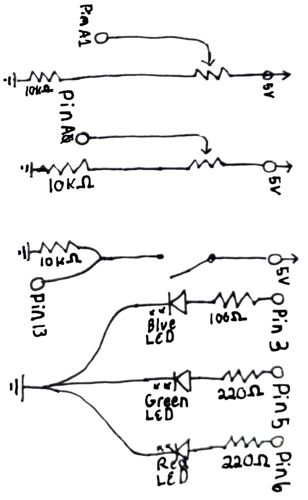
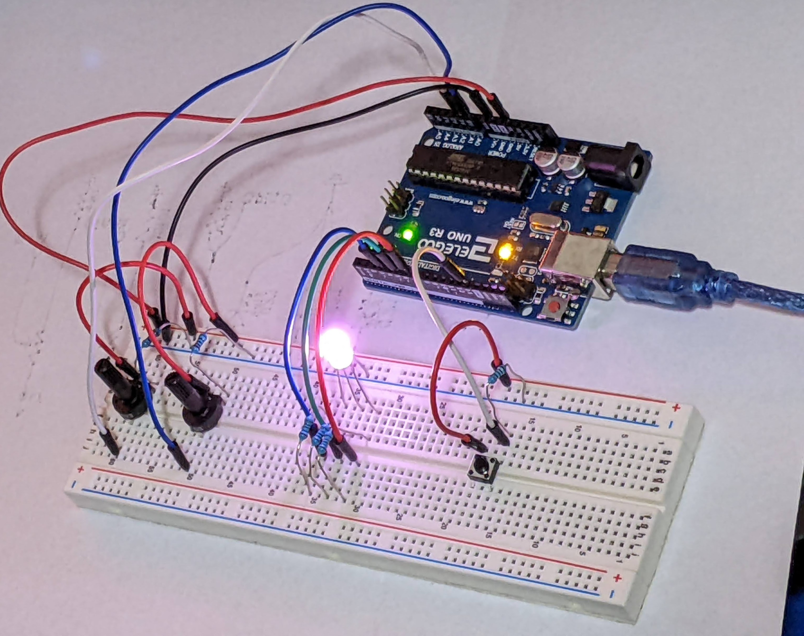

Cato's Assignment 2!
Here is all the documentation for assignment 2!
Gif

Schematic

I used 10k resistors for the potentiometers & button to provide a
path to ground while also limiting max current.
I then used a 100 and two 220 resistors for the blue and green/red
leds respectively as they were the smallest resistors possible while
not overloading the LEDs max current. The blue LED has a higher voltage
drop so has a smaller resistor.
Resistor math:
RYG LEDs have a 1.8 V drop => 5 V (power) - 1.8 V = 3.2 V
3.2 V / 0.02 I (ideal current) = 160 Ω (Closest higher Ω resistor is 220)
This math is repeated for Blue & White LEDs 3.3 V drop giving us 85 Ω rounded
to the closest resistor of 100 Ω
Circuit

Code
// These constants won't change. They're used to give names to the pins used:
const int blueSensor = A0; //Analog input pin that will control power to the blue led
const int greenSensor = A1; //Analog input pin that will control power to the green led
const int redPin = 6; // Analog output pin that the red LED is attached to
const int bluePin = 3;// Analog output pin that the blue LED is attached to
const int greenPin = 5;// Analog output pin that the green LED is attached to
const int buttonPin = 13; //digital input pin that will control power to the red led
int blueIN = 0; //raw value from the blue analog
int greenIN = 0; //raw value from the green analog
int bluePWR = 0; //controlled value sent to the blue LED
int greenPWR = 0; //controlled value sent to the green LED
int redPWR = 0;//controlled value sent to the red LED
void setup() {
// put your setup code here, to run once:
pinMode(buttonPin, INPUT); // sets up pin 13 as digital input
// Serial.begin(9600); // useful for debugging
}
void loop() {
// put your main code here, to run repeatedly:
blueIN = analogRead(blueSensor); //stores the reading from blue potentiometer
bluePWR = map(blueIN, 400, 1023, 0, 255); // converts the reading to an analog out friendly number
greenIN = analogRead(greenSensor); //stores the reading from green potentiometer
greenPWR = map(greenIN, 400, 1023, 0, 255); // converts the reading to ananalog outfriendly number
if (digitalRead(buttonPin) == HIGH) { //If statement for meausuring if button is pressed
redPWR = redPWR + 50; //increases amount red led will be shown
if (redPWR > 250) { //if statement for if output becomes analog out friendly number
redPWR = 0; //reset of red led
}
delay(1000); //delay so user doens't increase multiple times with one click
}
//following code block writes the previously gathered powers to their respective led pins
analogWrite(bluePin, bluePWR);
analogWrite(redPin, redPWR);
analogWrite(greenPin, greenPWR);
// following code block is used in debugging
// Serial.print("blue = ");
// Serial.print(bluePWR);
// Serial.print(" | green = ");
// Serial.print(greenPWR);
// Serial.print(" | red = ");
// Serial.println(redPWR);
}